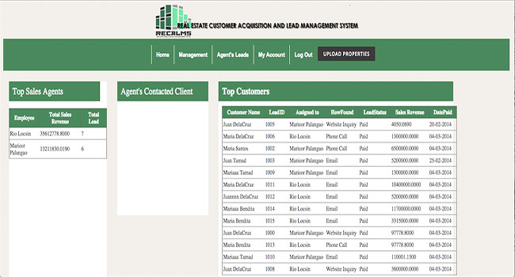

Technical Business Systems Analyst
with a Software Engineering background
I bring 9+ years of engineering & delivery experience, now specializing in business systems analysis, requirements engineering, and agile delivery. I help bridge the gap between business needs and technical execution by driving clarity, alignment, and scalable solutions.
My software engineering background allows me to understand system architecture, constraints, and implementation details, enabling me to translate business requirements into practical, scalable solutions.
I specialize in requirements gathering, stakeholder collaboration, and impact analysis to bring clarity to scope, reduce ambiguity, and align solutions with business objectives.
As a Scrum Master and Tech Lead, I facilitate agile ceremonies, remove blockers, and guide teams toward consistent, high-quality delivery while supporting strong collaboration between stakeholders and engineering teams.
I began my career as a Software Engineer, and that technical foundation continues to shape how I approach systems, delivery, and problem-solving.
Over the years, I’ve worked closely with stakeholders to gather requirements, perform impact analysis, and translate business needs into actionable technical solutions. This naturally led me into roles where I bridge business and engineering teams.
Today, I operate as a Technical Business Systems Analyst, combining hands-on engineering experience with strong skills in requirements analysis, stakeholder alignment, and agile delivery.
I’ve also led teams as a Scrum Master and Tech Lead, helping improve delivery flow, remove blockers, and ensure clarity across the development lifecycle.
I leverage modern tools such as AI-assisted development, GitHub Copilot, and automation workflows to improve productivity and support better decision-making across projects.
Languages, frameworks, and tools I work with
Some work done
Microservices | Cloud | Delivery
Delivered backend solutions for a payments order management system within an international banking environment, handling multiple microservices in a distributed architecture. Worked closely with stakeholders to support requirements analysis and translate business needs into secure, scalable services using Java, Spring Boot, RESTful APIs, and microservices. Contributed across the full delivery lifecycle, from design and development to testing and deployment, while ensuring high standards of performance, reliability, and maintainability. Supported production systems, resolved issues, and enabled efficient releases through Azure-based CI/CD pipelines.
Public Sector | Systems
Played a key role in the delivery of multiple government systems in Hong Kong by acting as a bridge between international stakeholders and engineering teams. Led requirements elicitation and clarification, conducted cross-module impact analysis, and translated functional specifications into scalable system enhancements, including UI and backend changes. Ensured continuous stakeholder alignment and delivery progress through proactive communication and coordination across project tasks.
Integration | Systems
Led end-to-end SCORM API integrations with international LMS clients, acting as the primary liaison between business stakeholders and engineering teams. Drove requirements elicitation, conducted impact and feasibility analysis, and translated functional needs into technical solutions. Implemented SSO and robust data synchronization protocols to ensure secure, scalable, and high-performing integrations.
Backend | Database
Drove backend and database enhancements by bridging business requirements and technical implementation. Facilitated requirements gathering sessions, conducted impact analysis, and translated functional needs into API designs and system changes, improving platform capability, scalability, and alignment with business objectives.
Professional credentials and recognition
Academic background and qualifications
Technology Management
University of the Philippines Diliman
Information Technology
Technological University of the Philippines Manila
Work completed through academic study and applied system design.
Analysis | Digital Transformation
Conducted end-to-end analysis of manual workflows in a SaaS-based financial system, identifying key operational gaps affecting efficiency and turnaround time. Proposed digital transformation initiatives across people, process, and technology, including process automation and structured issue management using JIRA, to enhance workflow efficiency and enable scalable business operations.

Capstone | System Design
Online Customer Acquisition and Lead Management System developed as a capstone project, focused on streamlining customer acquisition and lead management through end-to-end system design and implementation.
Have a project or opportunity? I'd love to hear from you.